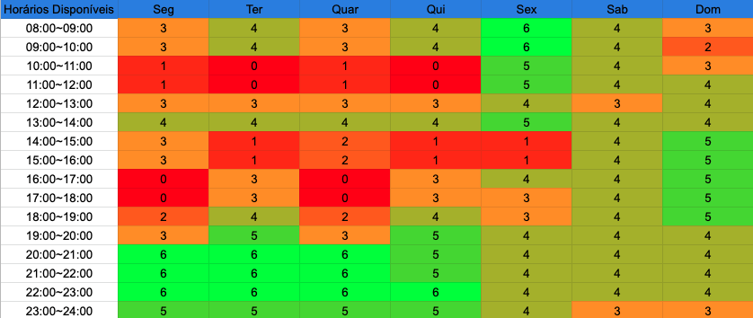
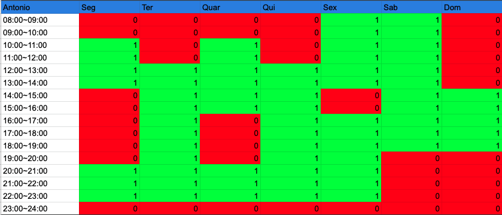
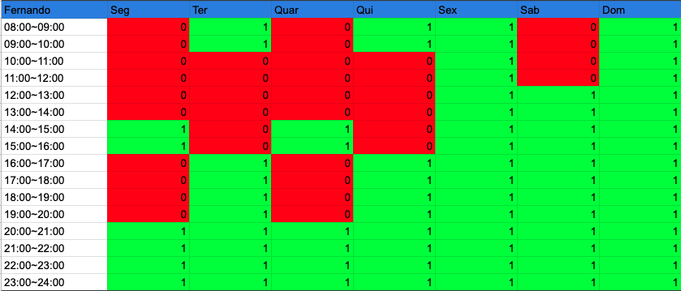
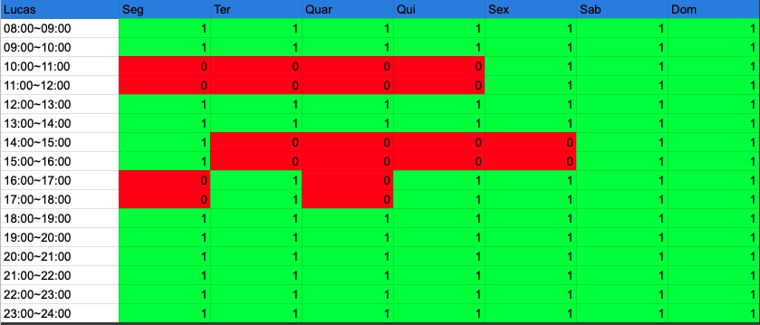
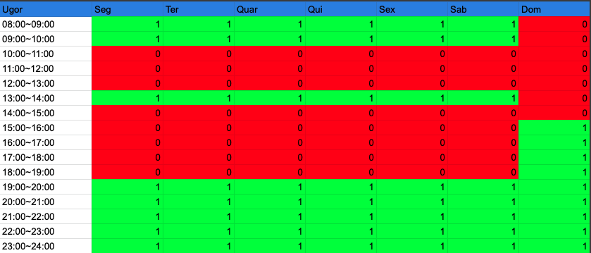

Planejamento
1. Aplicativos avaliados individualmente
Cada integrante avaliou um aplicativo de seu interesse, alguns membros realizaram a análise do mesmo aplicativo, como foi o caso da Carteira Digital de Trânsito. Temos então os seguintes aplicativos avaliados:
- Youtube
- Caixa Tem
- Carteira Digital de Trânsito
- Hemovida
- PagMeia
Apos breve discussão o grupo optou pelo aplicativo Caixa Tem.
2. Metodologia
A metodologia adotada pelo grupo foi o metodo SCRUM. [1]
- Daliy: Todo dia via whatsapp;
- Reunião Semanal:
Segunda a noiteSabado de manhã via discord; - Tempo em média da sprint: 7 dias;
2.1 Cronograma de atividades
Conforme as datas estipuladas pelo professor foi levantado um cronograma das atividades a serem realizadas. Vale salientar que as datas podem ser alteradas ao decorrer do tempo.
| Título | Data de entrega | Descrição |
|---|---|---|
| Pré-Rastreabilidade | 04/08 | Planejamento do projeto e RichPicture |
| Elicitação de Requisitos | 21/08 | Técnicas e Priorização |
| Modelagem de Requisitos | 30/08 | Cenários, Léxico, Use Case, Especificação Suplementar |
| Modelagem de Requisitos - Ágil | 11/09 | Histórias de Usuário, Backlogs, NFR Framework |
| Análise de Requisitos | 18/09 | Verificação e Validação |
| Pós-Rastreabilidade | 09/10 | Gerência de Desenvolvimento de Software orientada à baseline de Requisitos |
| Projeto final | 20/10 | Desenvolver a apresentação final do projeto |
2.2 Cronograma das Sprints
| Sprint | Inicio | Termino | Backlog da sprint |
|---|---|---|---|
| 0 | 29/07 | 01/08 | Escolha do Aplicativo, ferramentas e metodologia |
| 1 | 02/08 | 08/08 | Montagem de wiki |
| 2 | 10/08 | 16/08 | Questionário, Análise de Documentos, definição de técnicas de priorização (MoSCoW, Gráfico Tempo x Esforço), Tabela de argumentação e nova versão do Rich Picture |
| 3 | 17/08 | 21/08 | Entrevista, Observação, Storytelling, Introspecção, Brainstorming, Priorização dos requisitos |
| 4 | 22/08 | 27/08 | Revisão e Melhoria das técnias de Elicitação e Priorização. Léxico, Use Case, Especificação Suplementar, Cenários. |
| 5 | 28/08 | 03/09 | Desenvolvimento inicial das Histórias de Usuário, Backlog e NFR Framework |
| 6 | 04/09 | 10/09 | Finalização dos artefatos de História de Usuário, Backlog e NFR Framework |
| 7 | 11/09 | 17/09 | Verificação e Validação dos artefados construidos pela equipe |
| 8 | 18/09 | 24/09 | ---------- |
| 9 | 25/09 | 01/10 | Pós-Rastreabilidade 1 |
| 10 | 02/10 | 08/10 | Pós-Rastreabilidade 2 |
| 11 | 09/10 | 15/10 | Revisão do Conteúdo da wiki |
| 12 | 16/10 | 20/10 | Melhorias e preparação da apresentação final |
Obs: Os Backlogs das sprints serão atualizados ao longo do desenvolvimento do projeto.
3 Disponibilidade dos integrantes
A figura 01 apresenta o quadro de disponbilidade geral dos integrantes do grupo.

Obs: pode sofrer alteração ao longo do semestre.
3.1 Disponibilidade intividual dos integrantes






4. Ferramentas Utilizadas
| Ferramenta | Nome | Descrição |
|---|---|---|
| CAIXA Tem | Aplicativo análisado por essa equipe | |
| Github | Ferramenta de controle de versão de arquivos e código | |
| Discord | Ferramenta principal de reunião do grupo | |
| Google Workspace | Ferramenta de compatilhamento de arquivo | |
 |
Microsoft Teams | Ferramenta de reunião do grupo e gravação de apresentaçōes |
| Mensageiro principal do grupo para diálogo | ||
 |
Youtube | Plataforma de upload e visualização das apresentaçōes |
| Mkdocs | Ferramenta gerador de site estático minimalista | |
| Mkdocs - Material | Tema para a página | |
 |
Canva | Ferramenta para criação da apresentação |
Bibliografia
[1] - LEFFINGWELL, Dean; Agile Software Requirements: Lean Requirements Practices for Teams, Programs, and Enterprise. 1. ed. Boston: Pearson, 2011.
Versionamento
| Versão | Data | Modificação | Autor |
|---|---|---|---|
| 1.0 | 01/08/2021 | Criação do site | Antônio Aldisio |
| 1.01 | 02/08/2021 | Adicionou o bloco de Metodologia, Aplicativos avaliados individualmente e Ferramentas Utilizadas | Antônio Aldisio |
| 1.05 | 08/08/2021 | Ajuste de texto Adicionada referência teórica |
Fernando Calil |
| 1.06 | 26/08/2021 | Adicionada ferramenta de criação da apresentação. Adaptação e atualização do cronograma. | Fernando Calil |
| 1.07 | 11/09/2021 | Atualização do Cronograma de sprints de acordo com o andamento do projeto. | Fernando Calil |
| 1.08 | 11/10/2021 | Atualização do Cronograma de sprints de acordo com o andamento do projeto. | Fernando Calil |